☰ 目录
20180411Adaboost算法原理分析和实例_代码 简明易懂
自适应增强学习： 是每次选择一个误差率最小的分类器进行分类，然后根据误差 自动 调整它在 最后合成器 中的比重。
就是将有误差的简单分类器 合成 一个。 意思大概是取长补短。
优点： 不存在过拟合，不用事先知道 错误率的上下界。
（1）Adaboost提供一种框架，在框架内可以使用各种方法构建子分类器。可以使用简单的弱分类器，不用对特征进行筛选，也不存在过拟合的现象。
（2）Adaboost算法不需要弱分类器的先验知识，最后得到的强分类器的分类精度依赖于所有弱分类器。无论是应用于人造数据还是真实数据，Adaboost都能显著的提高学习精度。
（3）Adaboost算法不需要预先知道弱分类器的错误率上限，且最后得到的强分类器的分类精度依赖于所有弱分类器的分类精度，可以深挖分类器的能力。Adaboost可以根据弱分类器的反馈，自适应地调整假定的错误率，执行的效率高。
（4）Adaboost对同一个训练样本集训练不同的弱分类器，按照一定的方法把这些弱分类器集合起来，构造一个分类能力很强的强分类器，即“三个臭皮匠赛过一个诸葛亮”。
缺点：
在Adaboost训练过程中，Adaboost会使得难于分类样本的权值呈指数增长，训练将会过于偏向这类困难的样本，导致Adaboost算法易受噪声干扰。此外，Adaboost依赖于弱分类器，而弱分类器的训练时间往往很长。
原文链接：https://blog.csdn.net/guyuealian/article/details/70995333
【尊重原创，转载请注明出处】 http://blog.csdn.net/guyuealian/article/details/70995333
本人最初了解AdaBoost算法着实是花了几天时间，才明白他的基本原理。也许是自己能力有限吧，很多资料也是看得懵懵懂懂。网上找了一下关于Adaboost算法原理分析，大都是你复制我，我摘抄你，反正我也搞不清谁是原创。有些资料给出的Adaboost实例，要么是没有代码，要么省略很多步骤，让初学者很难看懂AdaBoost过程。
本博客将会详细介绍AdaBoost算法过程，并给出了一个Adaboost例子的详细求解过程，当然也给出了Matlab代码求解过程。碍于太多复杂公式，文章是在电脑Word文档写好再复制上博客的，为了排版好看，有些地方给出了截图。
下面给出几个我认为不错的博客资料：
【1】http://blog.csdn.net/v_july_v/article/details/40718799 感谢这位博主给出了 Adaboost 算法的原理与推导，本文章很多地方都参考了他的内容
【2】http://blog.csdn.net/m0_37407756/article/details/67637400 该博客有一个Adaboost 算法的例子，但其过程简略太多，初学者很难看懂。本文章的Adaboost 算法例子也是与之相对应的，但本人给出了详细的步骤和分析过程。话说，图都是我一个一个画上去，心疼我用了两天时间！！
一、AdaBoost简介
Boosting, 也称为增强学习或提升法，是一种重要的集成学习技术， 能够将预测精度仅比随机猜度略高的弱学习器增强为预测精度高的强学习器，这在直接构造强学习器非常困难的情况下，为学习算法的设计提供了一种有效的新思路和新方法。其中最为成功应用的是，Yoav Freund和Robert Schapire在1995年提出的AdaBoost算法。
AdaBoost是英文"Adaptive Boosting"（自适应增强）的缩写，它的自适应在于：前一个基本分类器被错误分类的样本的权值会增大，而正确分类的样本的权值会减小，并再次用来训练下一个基本分类器。同时，在每一轮迭代中，加入一个新的弱分类器，直到达到某个预定的足够小的错误率或达到预先指定的最大迭代次数才确定最终的强分类器。
Adaboost算法可以简述为三个步骤：
（1）首先，是初始化训练数据的权值分布D1。假设有N个训练样本数据，则每一个训练样本最开始时，都被赋予相同的权值：w1=1/N。
（2）然后，训练弱分类器hi。具体训练过程中是：如果某个训练样本点，被弱分类器hi准确地分类，那么在构造下一个训练集中，它对应的权值要减小；相反，如果某个训练样本点被错误分类，那么它的权值就应该增大。权值更新过的样本集被用于训练下一个分类器，整个训练过程如此迭代地进行下去。
（3）最后，将各个训练得到的弱分类器组合成一个强分类器。各个弱分类器的训练过程结束后，加大分类误差率小的弱分类器的权重，使其在最终的分类函数中起着较大的决定作用，而降低分类误差率大的弱分类器的权重，使其在最终的分类函数中起着较小的决定作用。
换而言之，误差率低的弱分类器在最终分类器中占的权重较大，否则较小。
二、AdaBoost算法过程
给定训练数据集：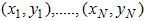，其中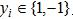用于表示训练样本的类别标签，i=1,...,N。Adaboost的目的就是从训练数据中学习一系列弱分类器或基本分类器，然后将这些弱分类器组合成一个强分类器。
相关符号定义：
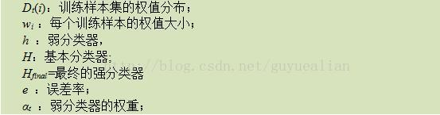
Adaboost的算法流程如下：
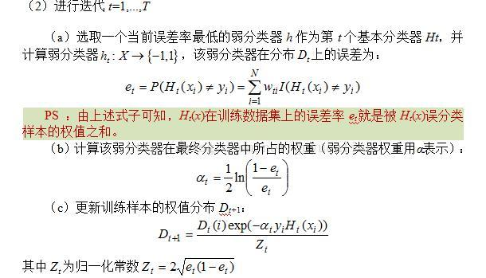
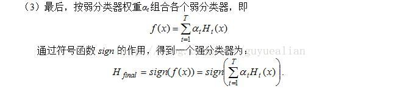
相关说明：
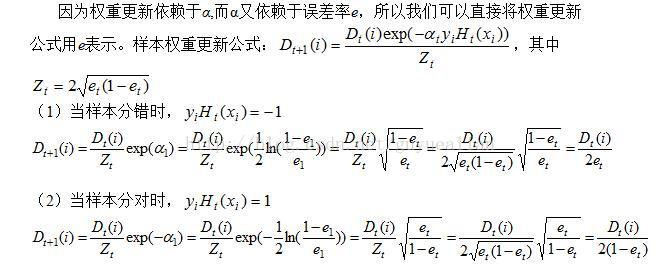
综合上面的推导，可得样本分错与分对时，其权值更新的公式为：
三、AdaBoost实例讲解
例：给定如图所示的训练样本，弱分类器采用平行于坐标轴的直线，用Adaboost算法的实现强分类过程。
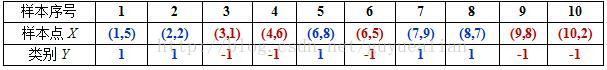
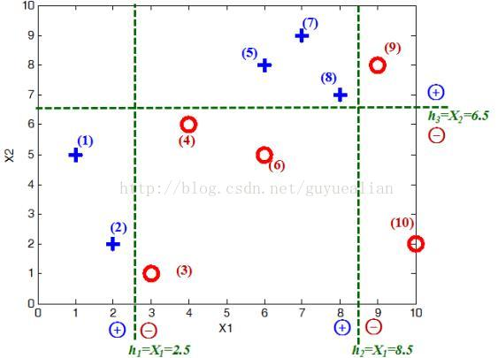
数据分析：
将这10个样本作为训练数据，根据 X 和Y 的对应关系，可把这10个数据分为两类，图中用“+”表示类别1，用“O”表示类别-1。本例使用水平或者垂直的直线作为分类器，图中已经给出了三个弱分类器，即：
初始化：
首先需要初始化训练样本数据的权值分布，每一个训练样本最开始时都被赋予相同的权值：w_i=1/N，这样训练样本集的初始权值分布D1(i)：
令每个权值w_1i = 1/N = 0.1，其中，N = 10，i = 1,2, ..., 10，然后分别对于t= 1,2,3, ...等值进行迭代（t表示迭代次数，表示第t轮），下表已经给出训练样本的权值分布情况：
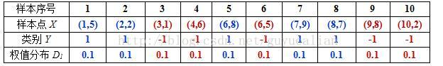
第1次迭代t=1：
初试的权值分布D_1为1/N（10个数据，每个数据的权值皆初始化为0.1），
D_1=[0.1,0.1, 0.1, 0.1, 0.1, 0.1,0.1, 0.1, 0.1, 0.1]
在权值分布D1的情况下，取已知的三个弱分类器h1、h2和h3中误差率最小的分类器作为第1个基本分类器H_1(x)（三个弱分类器的误差率都是0.3，那就取第1个吧）
在分类器H1(x)=h1情况下，样本点“5 7 8”被错分，因此基本分类器H1(x)的误差率为：
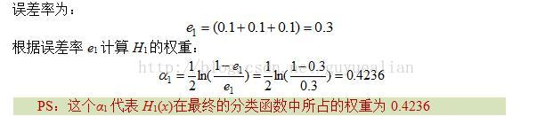
可见，被误分类样本的权值之和影响误差率e，误差率e影响基本分类器在最终分类器中所占的权重α。****
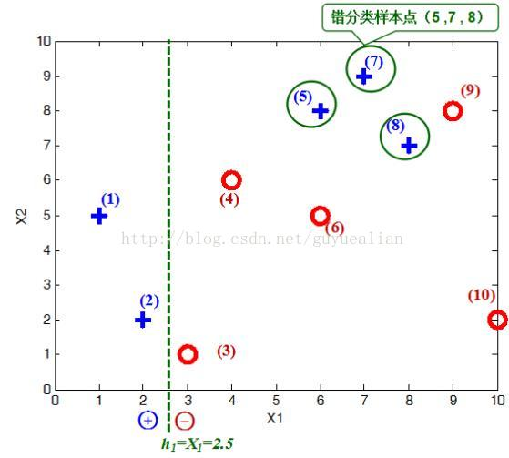
然后，更新训练样本数据的权值分布，用于下一轮迭代，对于正确分类的训练样本“1 2 3 4 6 9 10”（共7个）的权值更新为：
这样，第1轮迭代后，最后得到各个样本数据新的权值分布：
D2=[1/14,1/14,1/14,1/14,1/6,1/14,1/6,1/6,1/14,1/14]
由于样本数据“5 7 8”被H1(x)分错了，所以它们的权值由之前的0.1增大到1/6；反之，其它数据皆被分正确，所以它们的权值皆由之前的0.1减小到1/14，下表给出了权值分布的变换情况：
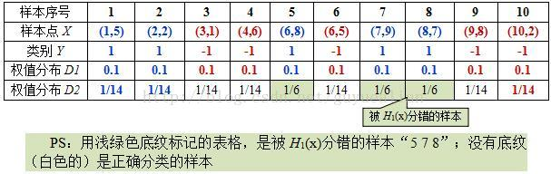
可得分类函数：f1(x)= α1H_1(*x*) = 0.4236*H_1(x)。此时，组合一个基本分类器sign(f1(x))作为强分类器在训练数据集上有3个误分类点（即5 7 8），此时强分类器的训练错误为：0.3
第二次迭代t=2：
在权值分布D2的情况下，再取三个弱分类器h1、h2和h3中误差率最小的分类器作为第2个基本分类器H2(x)：
① 当取弱分类器h1=X1=2.5时，此时被错分的样本点为“5 7 8”：
误差率e=1/6+1/6+1/6=3/6=1/2；
② 当取弱分类器h2=X1=8.5时，此时被错分的样本点为“3 4 6”：
误差率e=1/14+1/14+1/14=3/14；
③ 当取弱分类器h3=X2=6.5时，此时被错分的样本点为“1 2 9”：
误差率e=1/14+1/14+1/14=3/14；
因此，取当前最小的分类器h2作为第2个基本分类器H2(x)：
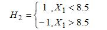
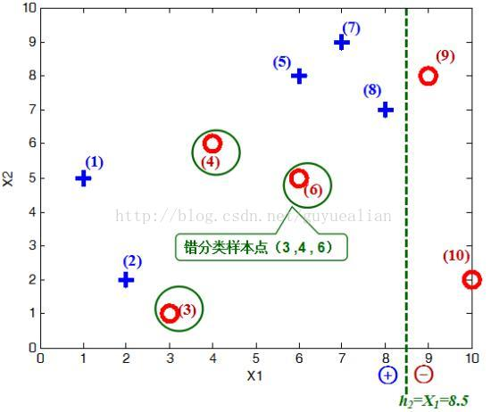
显然，H2(x)把样本“3 4 6”分错了，根据D2可知它们的权值为D2(3)=1/14，D2(4)=1/14， D2(6)=1/14，所以H2(x)在训练数据集上的误差率：
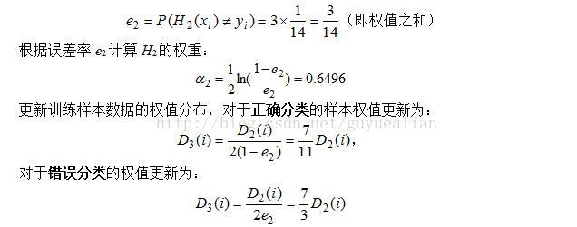
这样，第2轮迭代后，最后得到各个样本数据新的权值分布：
D3=[1/22,1/22,1/6,1/6,7/66,1/6,7/66,7/66,1/22,1/22]
下表给出了权值分布的变换情况：
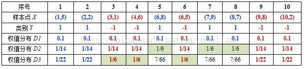
可得分类函数：f2(x)=0.4236H1(x) + 0.6496H2(x)。此时，组合两个基本分类器sign(f2(x))作为强分类器在训练数据集上有3个误分类点（即3 4 6），此时强分类器的训练错误为：0.3
第三次迭代t=3:
在权值分布D3的情况下，再取三个弱分类器h1、h2和h3中误差率最小的分类器作为第3个基本分类器H3(x)：
① 当取弱分类器h1=X1=2.5时，此时被错分的样本点为“5 7 8”：
误差率e=7/66+7/66+7/66=7/22；
② 当取弱分类器h2=X1=8.5时，此时被错分的样本点为“3 4 6”：
误差率e=1/6+1/6+1/6=1/2=0.5；
③ 当取弱分类器h3=X2=6.5时，此时被错分的样本点为“1 2 9”：
误差率e=1/22+1/22+1/22=3/22；
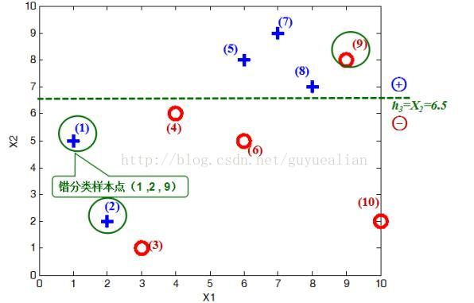
因此，取当前最小的分类器h3作为第3个基本分类器H3(x)：
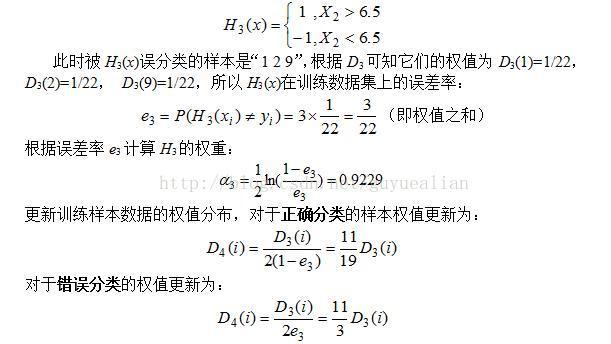
这样，第3轮迭代后，得到各个样本数据新的权值分布为：
D4=[1/6,1/6,11/114,11/114,7/114,11/114,7/114,7/114,1/6,1/38]
下表给出了权值分布的变换情况：
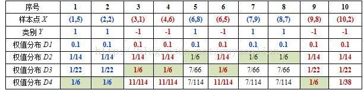
可得分类函数：f3(x)=0.4236H1(x) + 0.6496H2(x)+0.9229H3(x)。此时，组合三个基本分类器sign(f3(x))作为强分类器，在训练数据集上有0个误分类点。至此，整个训练过程结束。
整合所有分类器，可得最终的强分类器为：
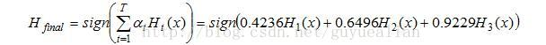
这个强分类器Hfinal对训练样本的错误率为0！
本例Matlab代码，如下：
先建立Matlab函数文件，定义h1,h2和h3三个弱分类器
function kind = wcH1( X,TH )
%h1弱分类器
X1=X(1);
X2=X(2);
if X1<TH
kind=1;
else
kind=-1;
end
end
function kind = wcH2( X,TH )
%h2弱分类器
X1=X(1);
X2=X(2);
if X1<TH
kind=1;
else
kind=-1;
end
end
function kind = wcH3( X,TH )
%h3弱分类器
X1=X(1);
X2=X(2);
if X2<TH
kind=-1;
else
kind=1;
end
end
主程序Matlab代码：
clc,clear all;
%% 训练样本数据
xData=[1 5;2 2;3 1;4 6;6 8;6 5;7 9;8 7;9 8;10 2] %样本数据点，对应编号为1,2,...10
Y=[1 1 -1 -1 1 -1 1 1 -1 -1]'; %对应的样本类别，用1和-1表示
xNum=1:10; %编号
format rat
%% 绘制样本分布图
L1=find(Y==1);
x=xData(L1,1);y=xData(L1,2);
plot(x,y,'b+','LineWidth',3,'MarkerSize',12);
hold on;
L2=find(Y==-1);
x=xData(L2,1);y=xData(L2,2);
plot(x,y,'ro','LineWidth',3,'MarkerSize',12);
xlabel('X1');ylabel('X2');axis([0 10 0 10])
%% ***********************************初试过程************************************
H1=zeros(10,1);H2=H1;H3=H1
for i=1:10
X=xData(i,:);
H1(i) = wcH1( X,2.5 );%弱分类器h1
H2(i) = wcH2( X,8.5 );%弱分类器h2
H3(i) = wcH3( X,6.5 );%弱分类器h3
end
errDataH1=find(H1~=Y);%找到被h1错分的样本点的序号
errDataH2=find(H2~=Y);%找到被h2错分的样本点的序号
errDataH3=find(H3~=Y);%找到被h3错分的样本点的序号
accDataH1=find(H1==Y);%找到被h1正确分的样本点的序号
accDataH2=find(H2==Y);%找到被h2正确分的样本点的序号
accDataH3=find(H3==Y);%找到被h3正确分的样本点的序号
errDataAll=[errDataH1,errDataH2,errDataH3];
accDataAll=[accDataH1,accDataH2,accDataH3];
N=10;
D1=zeros(10,1)+1/N % 初始化权值分布
%% ***********************************第一次迭代***********************************
err1=sum(D1(errDataH1,:));%所有被错分类的样本点的权值之和即为误差率
err2=sum(D1(errDataH2,:));%所有被错分类的样本点的权值之和即为误差率
err3=sum(D1(errDataH3,:));%所有被错分类的样本点的权值之和即为误差率
errAll=[err1,err2,err3];
[minErr,minIndex]=min(errAll);
%根据误差率e1计算H1的系数：
a1=0.5*log((1-minErr)/minErr)
minErrData=errDataAll(:,minIndex);
minAccData=accDataAll(:,minIndex);
D2=D1;
for i=minAccData'
D2(i)=D2(i)/(2*(1-minErr));
end
for i=minErrData'
D2(i)=D2(i)/(2*minErr);
end
D2
%分类函数
f1=a1.*H1;
kindFinal=sign(f1)%此时强分类器的分类结果
%% ***********************************第二次迭代***********************************
err1=sum(D2(errDataH1,:));%所有被错分类的样本点的权值之和即为误差率
err2=sum(D2(errDataH2,:));%所有被错分类的样本点的权值之和即为误差率
err3=sum(D2(errDataH3,:));%所有被错分类的样本点的权值之和即为误差率
errAll=[err1,err2,err3];
[minErr,minIndex]=min(errAll);
% 根据误差率e2计算H2的系数：
a2=0.5*log((1-minErr)/minErr)
minErrData=errDataAll(:,minIndex);
minAccData=accDataAll(:,minIndex);
D3=D2;
for i=minAccData'
D3(i)=D3(i)/(2*(1-minErr));
end
for i=minErrData'
D3(i)=D3(i)/(2*minErr);
end
D3
% 分类函数
f2=a1.*H1+a2*H2;
kindFinal=sign(f2)%此时强分类器的分类结果
%% ***********************************第三次迭代***********************************
err1=sum(D3(errDataH1,:));%所有被错分类的样本点的权值之和即为误差率
err2=sum(D3(errDataH2,:));%所有被错分类的样本点的权值之和即为误差率
err3=sum(D3(errDataH3,:));%所有被错分类的样本点的权值之和即为误差率
errAll=[err1,err2,err3];
[minErr,minIndex]=min(errAll);
% 根据误差率e3计算G3的系数：
a3=0.5*log((1-minErr)/minErr)
minErrData=errDataAll(:,minIndex);
minAccData=accDataAll(:,minIndex);
D4=D3;
for i=minAccData'
D4(i)=D4(i)/(2*(1-minErr));
end
for i=minErrData'
D4(i)=D4(i)/(2*minErr);
end
D4
% 分类函数
f3=a1.*H1+a2*H2+a3*H3;
kindFinal=sign(f3)%此时强分类器的分类结果
%%
Adaboost算法的某些特性是非常好的，这里主要介绍Adaboost的两个特性。（1）是训练的错误率上界，随着迭代次数的增加，会逐渐下降；（2）是Adaboost算法即使训练次数很多，也不会出现过拟合的问题。关于这两方面的研究和分析，我建议各大网友，还是看看大神的博客：http://blog.csdn.net/v_july_v/article/details/40718799
四、AdaBoost的优点和缺点
优点
（1）Adaboost提供一种框架，在框架内可以使用各种方法构建子分类器。可以使用简单的弱分类器，不用对特征进行筛选，也不存在过拟合的现象。
（2）Adaboost算法不需要弱分类器的先验知识，最后得到的强分类器的分类精度依赖于所有弱分类器。无论是应用于人造数据还是真实数据，Adaboost都能显著的提高学习精度。
（3）Adaboost算法不需要预先知道弱分类器的错误率上限，且最后得到的强分类器的分类精度依赖于所有弱分类器的分类精度，可以深挖分类器的能力。Adaboost可以根据弱分类器的反馈，自适应地调整假定的错误率，执行的效率高。
（4）Adaboost对同一个训练样本集训练不同的弱分类器，按照一定的方法把这些弱分类器集合起来，构造一个分类能力很强的强分类器，即“三个臭皮匠赛过一个诸葛亮”。
缺点：
在Adaboost训练过程中，Adaboost会使得难于分类样本的权值呈指数增长，训练将会过于偏向这类困难的样本，导致Adaboost算法易受噪声干扰。此外，Adaboost依赖于弱分类器，而弱分类器的训练时间往往很长。